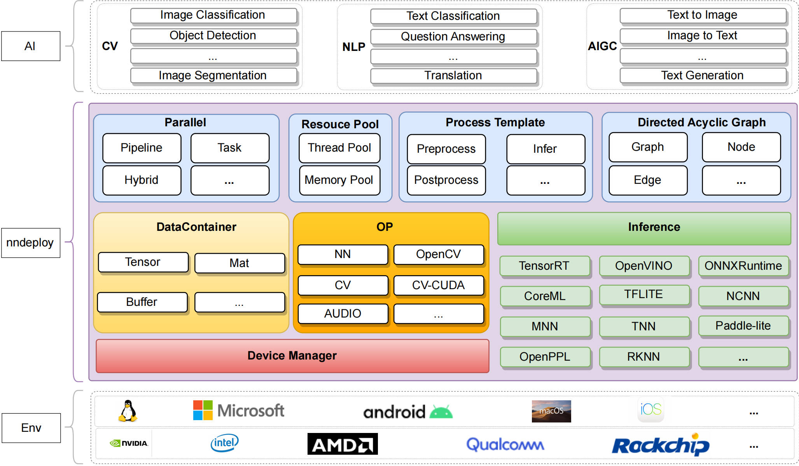
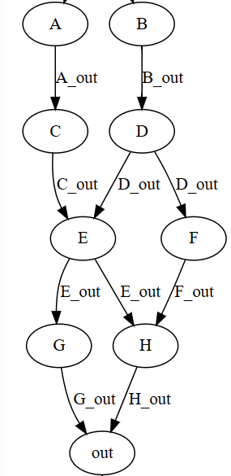

v2.0.0¶
历时七个月，15位开发者，245次commit，nndeploy迎来了稳定的v2.0.0版本。该版本完善了架构，增加了新功能，构建了用例，攥写了文档。当前版本更契合我们的目标——一款支持多平台、高性能、简单易用的机器学习部署框架。
我们希望v2.0.0版本能够在更多实际场景下应用，产生业务价值。欢迎体验新版本，期待您的反馈，更期待您的加入：https://github.com/nndeploy/nndeploy 。
nndeploy v2.0.0 主要包含以下新增功能、亮点和优化：
1. 优化后的全新架构¶

2. 新增模型支持¶
我们新增对分割模型SAM（segment anything）的支持，下图为SAM分割示例结果:
3. 新增多种并行模式¶
串行：按照模型部署的有向无环图的拓扑排序，依次执行每个节点。
任务并行：在多模型以及多硬件设备的的复杂场景下，基于有向无环图的模型部署方式，可充分挖掘模型部署中的并行性，缩短单次算法全流程运行耗时。
流水线并行：在处理多帧的场景下，基于有向无环图的模型部署方式，可将前处理 Node、推理 Node、后处理 Node绑定三个不同的线程，每个线程又可绑定不同的硬件设备下，从而三个Node可流水线并行处理。在多模型以及多硬件设备的的复杂场景下，更加可以发挥流水线并行的优势，从而可显著提高整体吞吐量。
上述模式的组合并行：在多模型、多硬件设备以及处理多帧的复杂场景下，nndeploy的有向无环图支持图中嵌入图灵活且强大的功能，每个图都可以有独立的并行模式，故用户可以任意组合您复杂场景下的模型部署任务的并行模式，具备强大的表达能力且充分发挥硬件性能。
YOLOv8n串行vs流水线并行性能结果比对
YOLOv8n处理24图片的串行vs流水线并行性能对比结果如下表所展示
| 模型 | 推理引擎 | 运行方式 | 耗时（ms） |
|---|---|---|---|
| YOLOv8n | onnxruntime | 串行 | 936.359 |
| YOLOv8n | onnxruntime | 流水线并行 | 796.763 |
| YOLOv8n | TensorRT | 串行 | 327.416 |
| YOLOv8n | TensorRT | 流水线并行 | 120.463 |
串行vs任务级并行
由于当前模型的推理流程内部并行度很小，不足以体现出任务级并行，我们构造了一个虚拟图；当每个节点耗时设置为10ms时，通过任务级并行可以将串行的90ms减少到50ms。

4. 新增线程池¶
线程池在nndeploy中扮演着至关重要的角色。它支撑nndeploy并行的需求，为任务级并行和流水线并行提供了稳定的基础。线程池的实现让框架能够更高效地管理并发任务，有效利用计算资源，并提升框架整体的性能表现。

5. 有向无环图的优化与重构¶
Node重构与优化：Node是有向无环图中的节点，代表进行某项运算或操作。前处理、推理、后处理、编解码都是节点，整个有向无环图也可以看做一个节点。节点本身不持有任何数据，数据从输入边流入，经过计算后，流出到输出边中。
Edge的重构与优化：Edge是有向无环图中的边，代表数据流动的方向，每个节点的输出边负责管理内存。Edge中可能持有Mat、Tensor、Buffer等数据。Edge分为固定边和流水线边，在串行、任务级并行中仅使用固定边；在流水线并行中仅使用流水线边。
Graph的重构与优化：Graph是有向无环图。由一系列Node、Edge及其拓扑关系组成，Graph中也可以嵌入Graph。
Loop Graph：继承Graph，新增Loop Graph，增强有向无环图的表达能力，提高复杂多模型部署场景下的开发效率。
Condition Graph：继承Graph，新增Loop Graph，增强有向无环图的表达能力，提高复杂多模型部署场景下的开发效率，在处理多帧以及多设备部署单模型场景下，通过与流水线并行的组合，可充分发挥所有硬件的性能，可显著提高整体吞吐量。
6. 推理模板的重构¶
对推理模板进行重构，基于多端推理模块 Inference + 有向无环图节点 Node 重新设计功能强大的推理模板Infer，Infer推理模板可以帮您在内部处理不同的模型带来差异，例如单输入、多输出、静态形状输入、动态形状输入、静态形状输出、动态形状输出、是否可操作推理框架内部分配输入输出等等一系列不同，面对不同的模型带来差异，通常需要具备丰富模型部署经验的工程师才能快速且高性能解决。
7. 新增编解码节点化¶
对于已部署好的模型，需要编写demo展示效果，而demo需要处理多种格式的输入，例如图片输入输出、文件夹中多张图片的输入输出、视频的输入输出等，通过将上述编解码节点化，可以更通用以及更高效的完成demo的编写，达到快速展示效果的目的。
8.多端推理子模块¶
当前版本新增如下推理框架的支持：
| Inference/OS | Linux | Windows | Android | MacOS | IOS | developer | remarks |
|---|---|---|---|---|---|---|---|
| ncnn | - | - | √ | - | - | Always | |
| coreML | - | - | - | √ | - | JoDio-zd、jaywlinux | |
| paddle-lite | - | - | - | - | - | qixuxiang | |
| AscendCL | √ | - | - | - | - | CYYAI | |
| RKNN | √ | - | - | - | - | 100312dog |
9. 设备管理模块¶
当前版本新增如下华为昇腾设备管理模块的支持：
| Device Manager | developer | remarks |
|---|---|---|
| AscendCL | CYYAI |
10. 文档¶
构建了友好、全面的文档，文档不以讲解API接口的用法为目的，而是侧重于探讨框架背后的设计理念和工作原理，用户可以更加全面地了解框架的运作方式，从而更好地发挥nndeploy在模型部署上的开发效率以及高性能的优势。
本次文档包含概述、开发者指南、架构指南等模块的部分内容，在未来的更新中，我们将继续完善文档内容，致力于为用户提供清晰、易懂的文档说明。
下一步规划¶
推理后端
完善已接入的推理框架coreml
完善已接入的推理框架paddle-lite
接入新的推理框架TFLite
设备管理模块
新增OpenCL的设备管理模块
新增ROCM的设备管理模块
新增OpenGL的设备管理模块
内存优化
主从内存拷贝优化：针对统一内存的架构，通过主从内存映射、主从内存地址共享等方式替代主从内存拷贝内存池：针对nndeploy的内部的数据容器Buffer、Mat、Tensor，建立异构设备的内存池，实现高性能的内存分配与释放多节点共享内存机制：针对多模型串联场景下，基于模型部署的有向无环图，在串行执行的模式下，支持多推理节点共享内存机制边的环形队列内存复用机制：基于模型部署的有向无环图，在流水线并行执行的模式下，支持边的环形队列共享内存机制
stable diffusion model
类似comfyui的产品
部署stable diffusion model
针对stable diffusion model搭建stable_diffusion.cpp（推理子模块，手动构建计算图的方式）
高性能op
分布式
在多模型共同完成一个任务的场景里，将多个模型调度到多个机器上分布式执行
在大模型的场景下，通过切割大模型为多个子模型的方式，将多个子模型调度到多个机器上分布式执行
开源运营
推广
吸引开发者
平衡 自己的时间 和 培养开发者：
技术深度 or 产品
公司落地
贡献者¶
感谢以下贡献者：
@Alwaysssssss，@youxiudeshouyeren，@02200059Z，@JoDio-zd，@qixuxiang，@100312dog，@CYYAI，@PeterH0323，@zjhellofss，@zhouhao03，@jaywlinux，@ChunelFeng，@acheerfulish，@wangzhaode，@wenxin-zhao
加入我们¶
nndeploy是由一群志同道合的网友共同开发以及维护，我们不定时讨论技术，分享行业见解。当前nndeploy正处于发展阶段，如果您热爱开源、喜欢折腾，不论是出于学习目的，抑或是有更好的想法，欢迎加入我们。
微信：Always031856 (可加我微信进nndeploy交流群，备注：nndeploy+姓名)